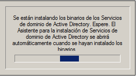
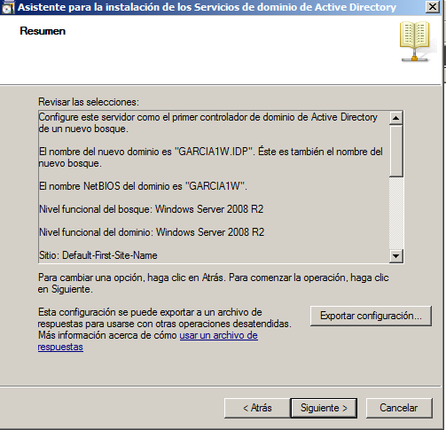
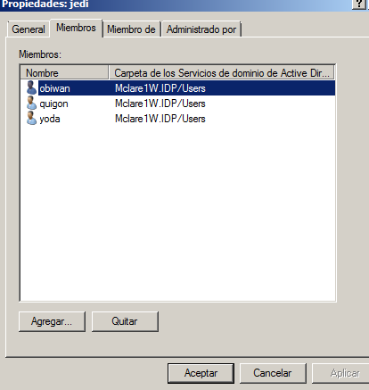
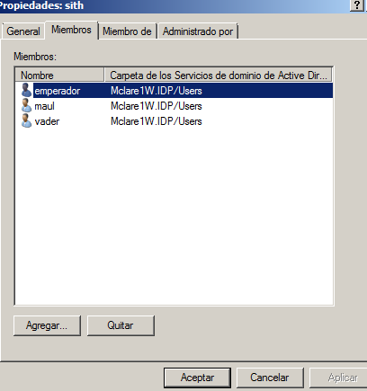
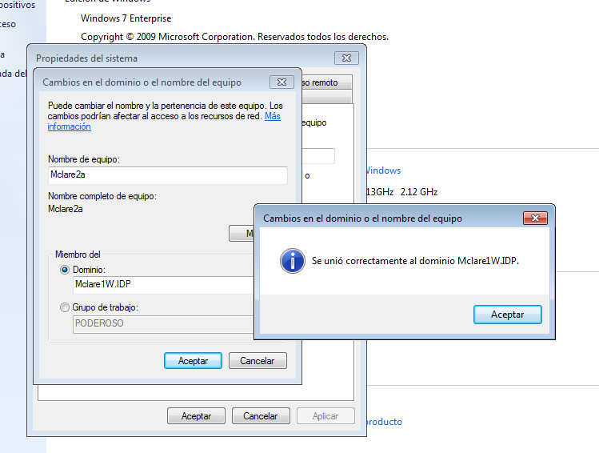
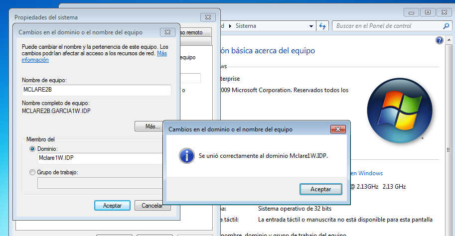
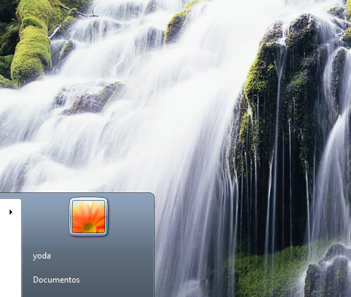

- Módulo: Sistemas Operativos
- Título del trabajo PDC WinServer
- Componentes del grupo: Abel Garcia
- Curso Académico: 2013/2014
- Fecha de entrega: 28 de abril de 2014
Necesitamos una MV con Windows 2008 Server Enterprise.
- Recién instalado, el WinServer es estricto con la política de seguridad, en cuanto a cómo deben definirse las claves
- Configuramos el host con DNS1 el propio Windows-Server (127.0.0.1), y DNS2 el del centro (172.16.1.1)
- Para activar la función de controlador de dominios abrimos una consola (cmd) y ejecutar el comando "dcpromo"

- Se inicia el asistente de configuración de lo servicios del dominio de AD.
- Modo experto => NO
- Crear un dominio nuevo de un bosque nuevo => SI
- FQDN del dominio => MCLARE1W.IDP
- Nivel funcional del bosque => Windows Server 2008 R2
- Servidor DNS => SI
- Carpetas de almacenamiento => Dejar valores por defecto.
Al terminar reiniciar el sistema.

- Ir a Inicio -> Herramientas Administrativas -> Usuarios y Equipos de Active Directory
- Crear el grupo JEDI con los siguientes usuarios de dominio: "yoda,", "obiwan" y "quigon". No confundir usuarios locales con usuarios del dominio.
- Crear el grupo SITH con los siguientes usuarios de dominio: "emperador", "vader" y "maul"
 
- MV's CLIENTES: Necesitaremos 2 MV's con Windows 7 enterprise, que actuarán de clientes
- Nombres NETBIOSB>: Cada cliente Windows7 debe tener un nombre NETBIOS. Habíamos establecido si el primer apellido si es MCLARE por ejemplo, usaremos el nombre "MCLARE2". Como tenemos 2 clientes usaremos "MCLARE2a" para el primer cliente, "MCLARE2b" para el segundo, y así sucesivamente.
- FECHA/HORA: Es muy importante que todos los equipos estén bien sincronizados en cuanto al reloj. No puede haber diferencias de más de 5 minutos
- RED: Además el cliente debe tener como DNS1 la IP del PDC, y como DNS2 a otro servidor DNS
- Ahora vamos a unir el equipo cliente al dominio. Ir a "Equipos (Botón derecho) -> Propiedades -> Cambiar configuración -> Cambiar -> Dominio (Escribir el nombre del dominio) -> Aceptar".

- Para comprobar que podemos entrar en los equipos "MCLARE2a" y "MCLARE2b" usando los usuarios del dominio
Este apartado no lo pude realizar porque cuando hago los procesos al final no me aparecen las carpetas creadas en la carpeta asignada
EJ:

En este apartado me pasa lo mismo que en el anterior